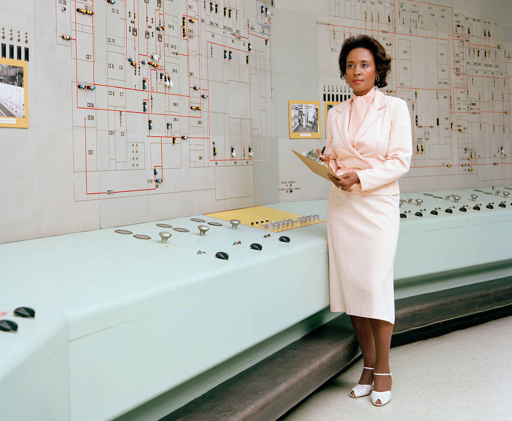

American computer scientist, mathematician, and rocket scientist
Annie Jean Easley (April 23, 1933 – June 25, 2011) was an American computer scientist, mathematician, and rocket scientist.
She worked for the Lewis Research Center (now Glenn Research Center) of the National Aeronautics and Space Administration (NASA) and its predecessor, the National Advisory Committee for Aeronautics (NACA). She was a leading member of the team which developed software for the Centaur rocket stage,[
and was one of the first African-Americans to work at NASA.
Easley was posthumously inducted into the Glenn Research Hall of Fame in 2015.
On February 1, 2021, a crater on the moon was named after Easley by the IAU.